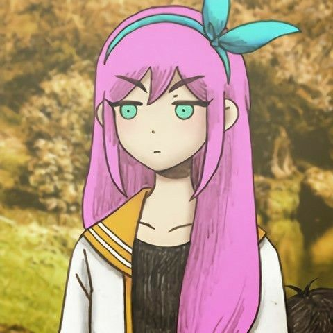

| AUBREY is one of the main three deuteragonists in OMORI that join OMORI's party. In the FARAWAY TOWN sections of the game, she serves as a minor antagonist. When tagged as the leader, AUBREY can smash obstacles with a bat.During her youth, AUBREY is very cheerful and always happy to play with her friends. Strong-willed and always acting true to her feelings, AUBREY serves as a constant source of morale for her friends. This extends to often reminding the group of the right thing to do whenever they are distracted. Despite this, she becomes sad and worried quite easy; she is the most anxious one of the friend group when BASIL goes missing. Often she is clumsy, resulting in yelling from KEL, who she always fights with. Her childhood traits are shared with her HEADSPACE counterpart, albeit slightly different with her puppy love persona towards OMORI.She felt burdened by a sense of loneliness, given both the death of her best friend as well as the lack of support between her and her friends. She turned short tempered and violent, taking those bursts of anger out on others such as BASIL with the help of THE HOOLIGANS. |

|